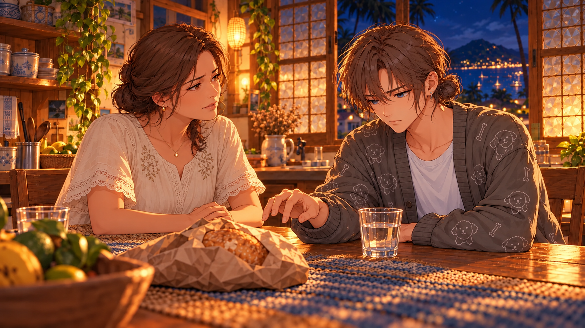
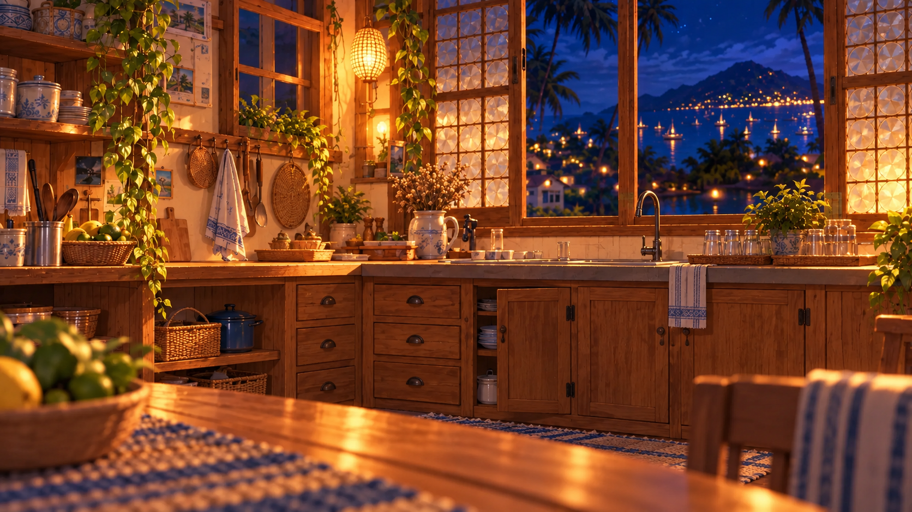
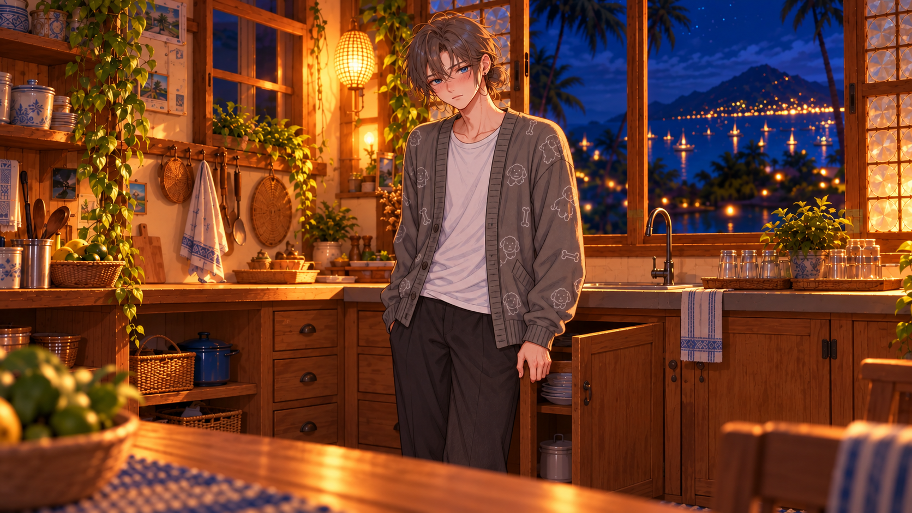
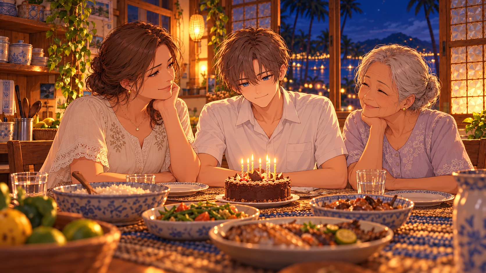
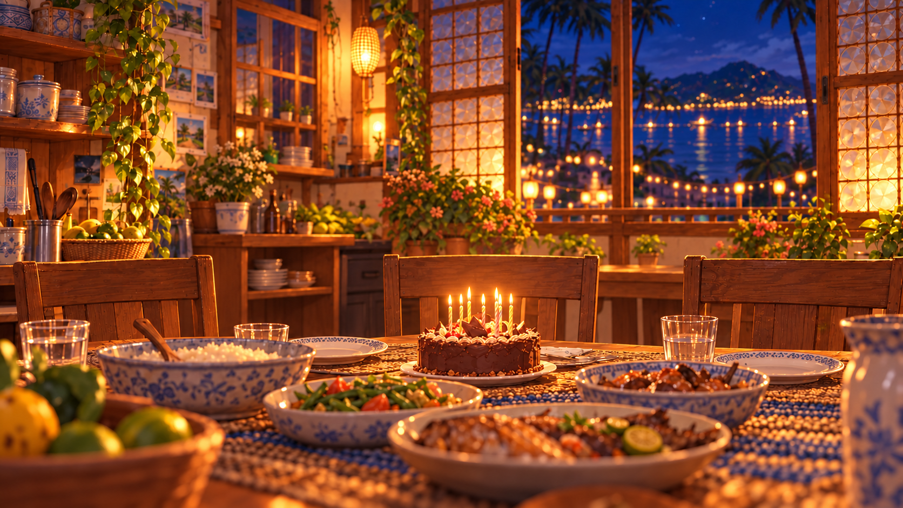
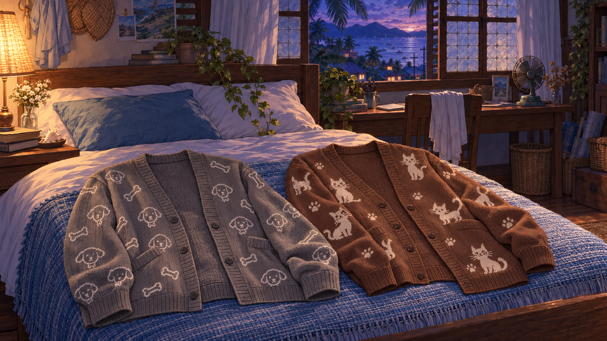
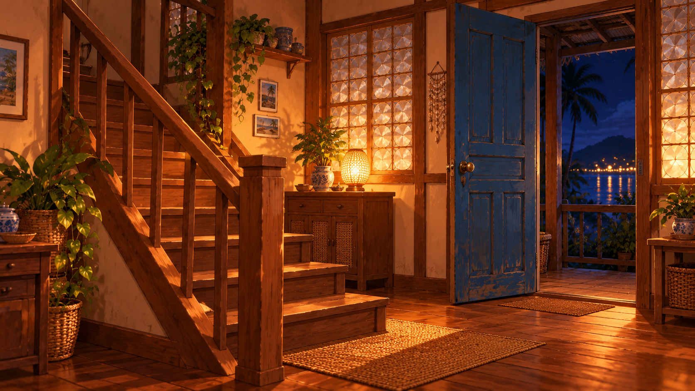
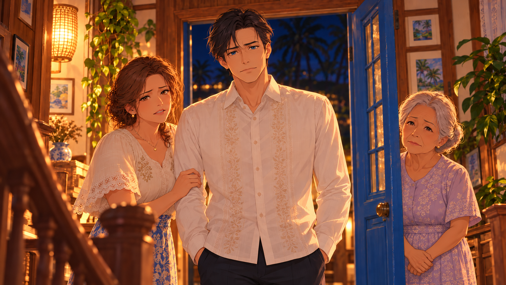

Continuation — CG and background previews
Five CGs and three reusable backgrounds. Preview only: no game code, dialogue, choices, or existing assets changed.
Use existing night dining, porch, and bedroom backgrounds for the remaining everyday dialogue. All artwork below opens at full resolution.
1. Dinner interrupted
Brief CG when Mayumi says his father called and Rowan stops reaching for bread. Return to the existing night dining background for the conversation and choices.

2. Kitchen at night — background
Use during clearing the glasses and the cabinet-door moment, with Rowan’s sprite.

3. Rowan opens up
Use at the emotional turn when MC asks to know the Rowan he is now. Return to the kitchen background before the flashback.

4. Rowan’s eighteenth birthday
Introduce the birthday flashback with Rowan, Mayumi, and Lola. Rowan has short hair and a school uniform. Lola’s appearance is a proposed design.

5. Birthday dinner — background
Use for the birthday conversation after the establishing CG.

6. Lola’s cardigan gifts
Reveal when Rowan finds the two cardigans upstairs. Hold through his choice of the gray cardigan; use the existing bedroom background for surrounding dialogue.

7. Stairs and doorway — background
Use as Rowan comes downstairs and overhears the argument. Keep the visitor off-screen until the reveal.

8. Meeting Enrich
Show when Rowan sees the visitor and Mayumi introduces Enrich. End at “Father?” This preview’s pose and character designs remain subject to review.
